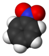

nitrobenzene

Definition: Nitrobenzene is an organic compound with the chemical formula C6H5NO2. It is a water-insoluble pale yellow oil with an almond-like odor. It freezes to give greenish-yellow crystals. It is produced on a large scale from benzene as a precursor to aniline. In the laboratory, it is occasionally used as a solvent, especially for electrophilic reagents.
Source: Wikipedia
Wikipedia Page
Wikidata Page